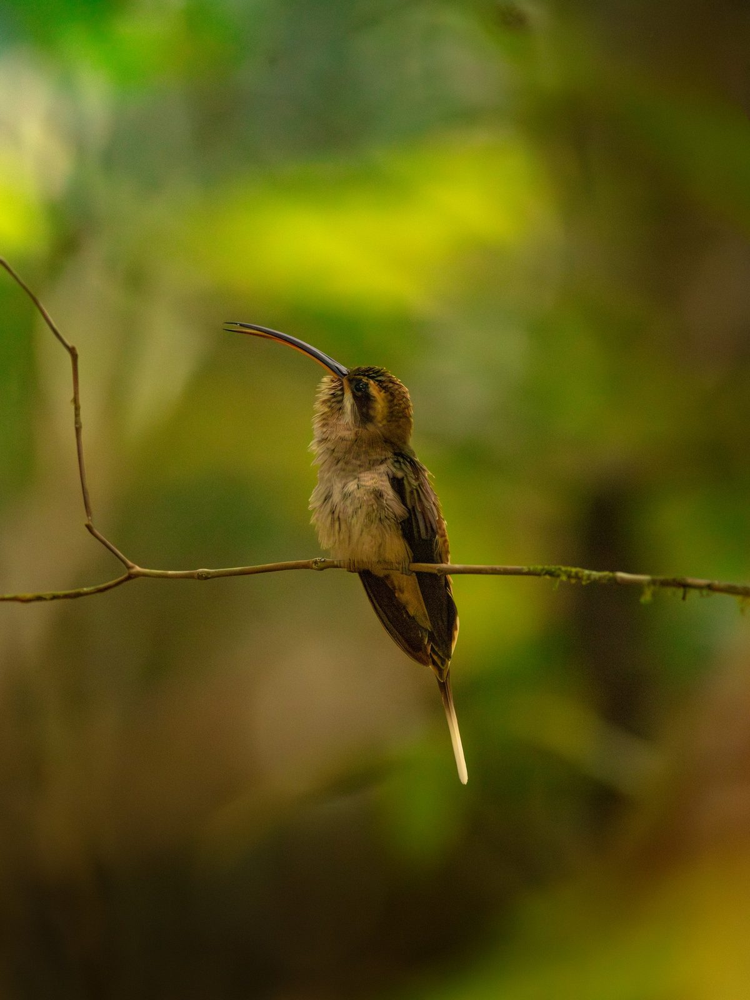

Colibrí Ermitaño Mesoamericano
Phaethornis longirostris (Delattre, 1843)
Inglés: Long-billed Hermit
El Colibrí Ermitaño Mesoamericano (Phaethornis longirostris) es un colibrí de la subfamilia Phaethornithinae (ermitaños). Pesa alrededor de 6.0 g y su pico mide 42.6 mm. Vive en 11 países, entre ellos Costa Rica, Belice, Panamá, Honduras y Colombia. Su estado en la Lista Roja de la UICN es Preocupación menor, con una población en disminución.
Verlo en el explorador Página en eBird ↗
De un vistazo
- Peso
- 6.0 g, más o menos 6 clips
- Pico
- 42.6 mm
- Vive en
- Bosque
- Movimientos
- Se queda en su zona todo el año
- Lista Roja
- Preocupación menor, en disminución
Su lugar en la familia
- Familia Trochilidae colibríes
- Subfamilia Phaethornithinae ermitaños
- Género Phaethornis ermitaños
Lo que tienen en común los Phaethornis: Picos largos y curvos, y plumas centrales de la cola largas, a menudo con la punta blanca. Los machos se reúnen en leks para cantar.
Dónde vive · 11 países
Otros del género Phaethornis
- Ermitaño Piquirrecto Phaethornis bourcieri
- Colibrí Ermitaño Mexicano Phaethornis mexicanus
- Ermitaño Picoaguja Phaethornis philippii
- Ermitaño Colilargo Phaethornis superciliosus
- Ermitaño de Koepcke Phaethornis koepckeae
- Ermitaño Picogrande Phaethornis malaris
- Ermitaño Ventrihabano Phaethornis syrmatophorus
- Ermitaño Ventripálido Phaethornis anthophilus
- Ermitaño Verde Phaethornis guy
- Ermitaño Escuálido Phaethornis squalidus
Fuentes
Nombres: eBird/Clements Checklist (Cornell Lab of Ornithology), con los nombres en español de eBird México. Grupos: Dickinson y Remsen (2013) y McGuire et al. (2014); los nombres de los grupos siguen los de eBird en español cuando existen y, si no, se dejan en inglés. Peso, pico, hábitat y movimientos: AVONET (Tobias et al. 2022, CC BY 4.0). Países: BirdLife International DataZone, comparado con registros de eBird a través de GBIF. Estado y tendencia en la Lista Roja: BirdLife International, la autoridad de la Lista Roja de la UICN para las aves.
¿Encontraste un error o tienes una foto de esta especie? Escríbele a Lia